CONSTRUCTION SPECIFICATIONS
- Path
- Descriptions > 10 ENGINE > 1058 GAS CIRCUIT > CONSTRUCTION SPECIFICATIONS
- Kind
- system description
- Applies to
- engines: 2.0 16V; all production periods; only with equipment: Methane
- Interactive page
- https://sloeber94.github.io/elrnDB-fDct/en/#/244000406
Applies to: engines: 2.0 16V; all production periods; only with equipment: Methane
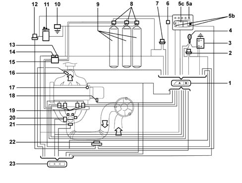
OPERATION
Diagram showing information entering/leaving the control unit
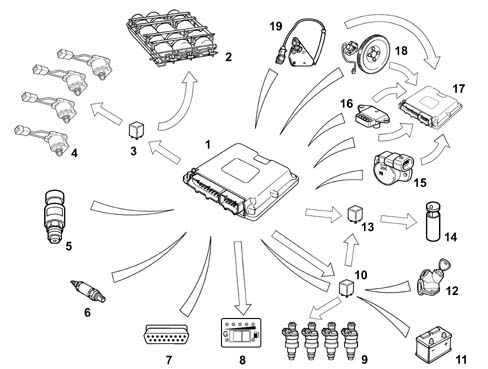
OPERATING LOGICS
Petrol operation
Methane operation
Engine Signal Management
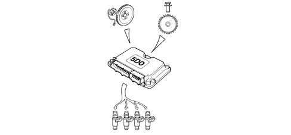
Ignition management
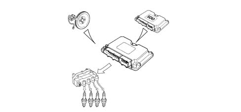
Injection management
Idle speed management
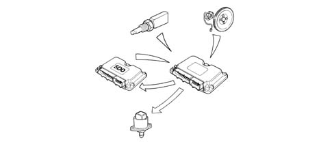
Start-up
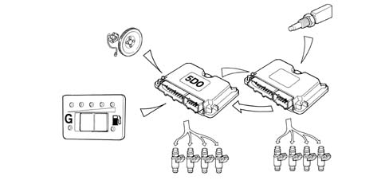
Operation during acceleration and deceleration
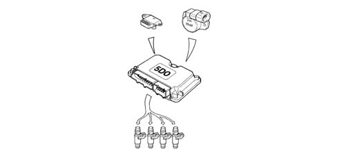
CUT-OFF operation
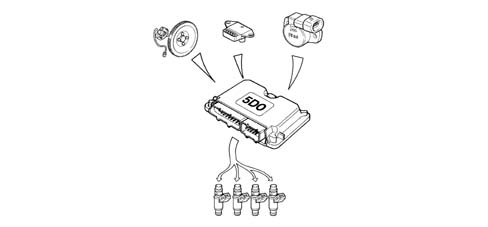
Operation in full load conditions
Protection beyond revs
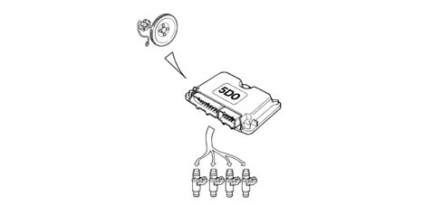
Barometric correction
Control of combustion gases - pre-catalyzer Lambda sensor
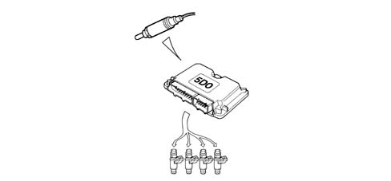
Air conditioning compressor connection
Residual fuel pressure signal
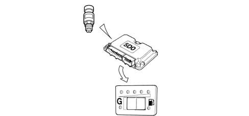
Petrol pump operation
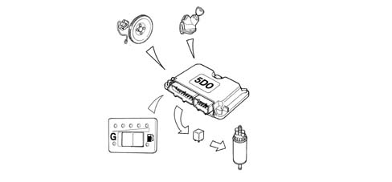
Methane cut out solenoid valve operation
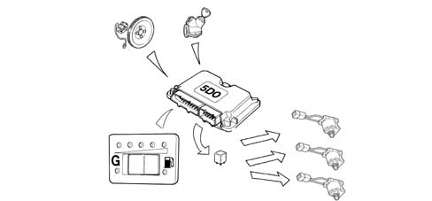
Methane injector operation
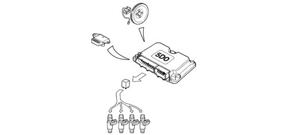
Switching between two operating modes (petrol and methane)
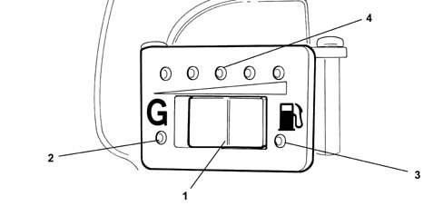
Connection with electronic key
System self-diagnosis
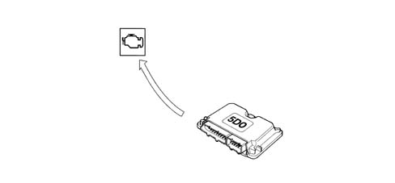
PASSIVE SELF-DIAGNOSIS
Manifold pressure sensor
Throttle position sensor
Methane pressure sensor
CAN line
Pre-catalyzer Lambda sensor
Rpm sensor
Timing sensor
Methane injectors
Methane injector relay
CNG cut out solenoid valve relay
Petrol pump cut out relay
LOCATION OF BIPOWER SYSTEM COMPONENTS IN ENGINE COMPARTMENT
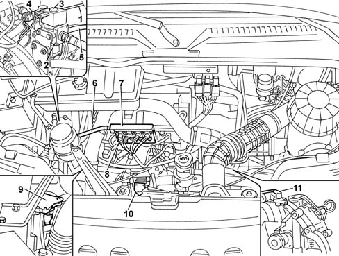
Methane pressure sensor
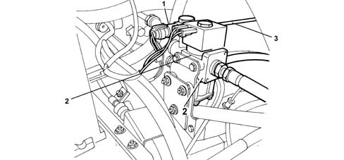
Operation
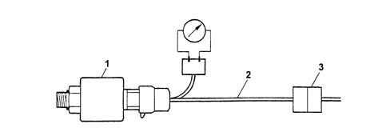
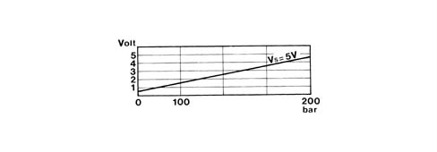
Rpm and TDC sensor
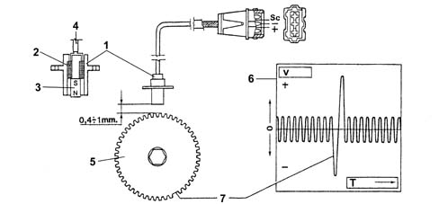
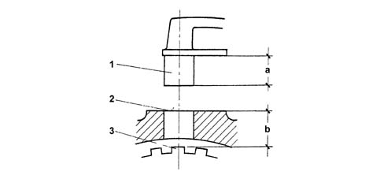
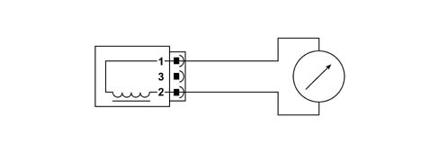
METAFUEL 5D0 INJECTION CONTROL UNIT
METAFUEL 5D0 control unit pin out
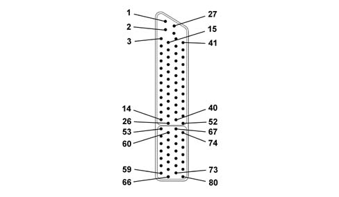
METHANE DISTRIBUTION MANIFOLD
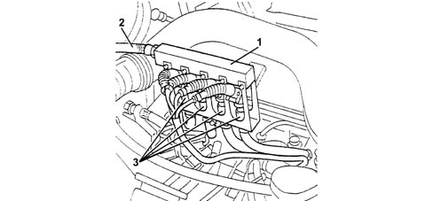
METHANE INJECTORS
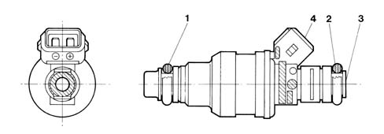
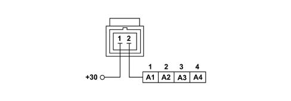
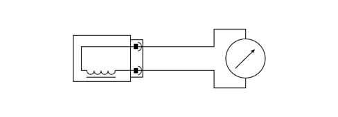
Applies to: engines: 2.0 16V; all production periods
Ignition management
Injection management
Idle speed management
Start-up
Operation during acceleration and deceleration
CUT-OFF operation
Operation in full load conditions
Protection beyond revs
Barometric correction
Control of combustion gases - pre-catalyzer Lambda sensor
Air conditioning compressor connection
Residual fuel pressure signal
Petrol pump operation
Methane cut out solenoid valve operation
Methane injector operation
Switching between two operating modes (petrol and methane)
Connection with electronic key
System self-diagnosis
PASSIVE SELF-DIAGNOSIS
Manifold pressure sensor
Throttle position sensor
Methane pressure sensor
CAN line
Pre-catalyzer Lambda sensor
Rpm sensor
Timing sensor
Methane injectors
Methane injector relay
CNG cut out solenoid valve relay
Petrol pump cut out relay
LOCATION OF BIPOWER SYSTEM COMPONENTS IN ENGINE COMPARTMENT
Methane pressure sensor
Operation
Rpm and TDC sensor
METAFUEL 5D0 INJECTION CONTROL UNIT
METAFUEL 5D0 control unit pin out
METHANE DISTRIBUTION MANIFOLD
METHANE INJECTORS
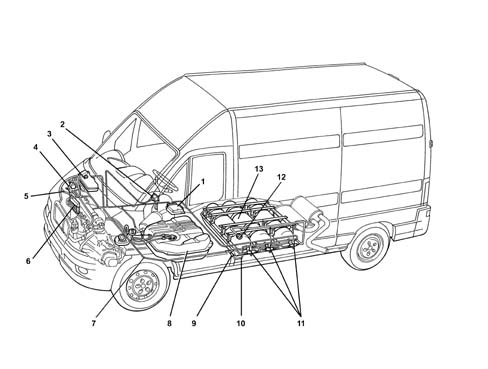
LOCATION OF BIPOWER SYSTEM COMPONENTS IN ENGINE COMPARTMENT
Methane pressure sensor
Operation
Rpm and TDC sensor
Methane canister valve unit
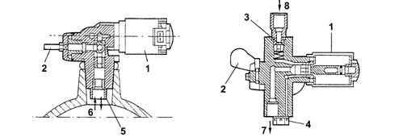
Solenoid valve operation
Manual cut out valve (tap)
Single-acting valve
Safety devices
High pressure methane pipe
Methane pressure reduction unit
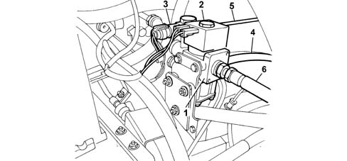
Pressure reduction unit operation
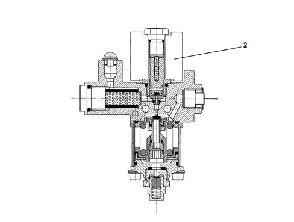
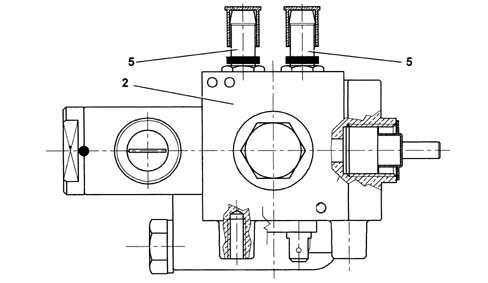
Cut out solenoid valve
Methane distribution manifold
Methane injectors
BIPOWER SYSTEM CONSTRUCTION SPECIFICATIONS
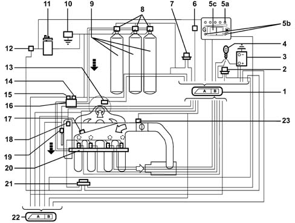